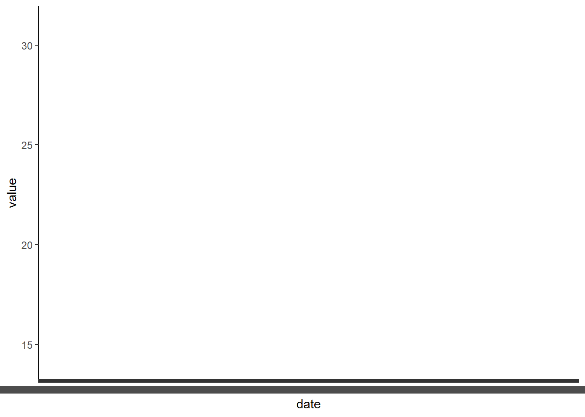

Date and time are often important variables in scientific data analysis. We are often interested in change over time and we also often do time series sampling. Learning how to manage dates and times in R is essential! Luckily, there is a user friendly and tidyverse friendly package that can help us with dates, times, and datetimes. That package is called ‘lubridate’ and we will learn all about it below.
Loading required package: timechange
Attaching package: 'lubridate'
The following objects are masked from 'package:base':
date, intersect, setdiff, union
Date and Time in R
R and really all programming languages have a difficult time with dates and times. Luckily, programmers have developed ways to get computer to understand dates and times as time series (so we can plot them on a graph axis and do analysis, for example).
There are several common formats of date and time that we don’t need to get into, but for many tools we use in the field we have a timestamp that includes day, month, year, and time (hours, minutes, and maybe seconds). When all of that info ends up in 1 column of a .csv it can be annoying and difficult to get R to understand what that column means. There are tons of ways to solve this problem but the easiest is definitely to just use some simple functions in the Lubridate package!
Read in some data to practice with
dat<-read.csv('https://raw.githubusercontent.com/jbaumann3/Intro-to-R-for-Ecology/main/final_bucket_mesocosm_apex_data.csv')head(dat) #take a look at the data to see how it is formatted
To do this we just need to recognize the order of or date/time. For example, we might have year, month, day, hours, minutes OR day, month, year, hours, minutes in order from left to right.
In this case we have: 07/01/2021 00:00:00 or month/day/year hours:minutes:seconds. We care about the order of these. So to simply, we have mdy_hms Lubridate has functions for all combinations of these formats. So, mdy_hms() is one. You may also have ymd_hm() or any other combo. You just enter your date info followed by an underscore and then your time info. Here’s how you apply this!
dat$date<-mdy_hms(dat$date) #converts our date column into a date/time object based on the format (order) of our date and time str(dat)# date is no longer a factor but is now a POSIXct object, which means it is in date/time format and can be used for plots and time series!
Here we have two example graphs that show why dates are annoying and how using lubridate helps us!
A graph using the raw data alone (not changing date to a date/time object)

same graph after making date into a date/time object
Tidyverse data wranglingIntroduction to R for Bio/Eco/EvoSummarizing DataIntro to the TidyverseStringing functions together with the pipeSummarizing DataDate and TimeHome/index.htmlR BasicsGetting Started with RStudio/getting_started.htmlPackages & reading/writing data/rbasics.htmlTidyverse data wranglingIntro to the Tidyverse/intro_tidyverse.htmlStringing functions together with the pipe/pipe.htmlSummarizing Data/groupsmeans.htmlDate and Time/datetime.htmlGraphsIntro to ggplot2/basic_graphs.htmlColors/colors.htmlShapes/shapes.htmlThemes/themes.htmlAxes labels and Titles/axes.htmlMultiple panels and multiple graphs/facets.htmlUsing QuartoGetting Started with Quarto/usingquarto.htmlDate and Time
Introduction to R for Bio/Eco/Evo - Date and TimeIntroduction to R for Bio/Eco/Evo - Date and TimeIntroduction to R for Bio/Eco/Evo - Date and TimeIntroduction to R for Bio/Eco/Evo